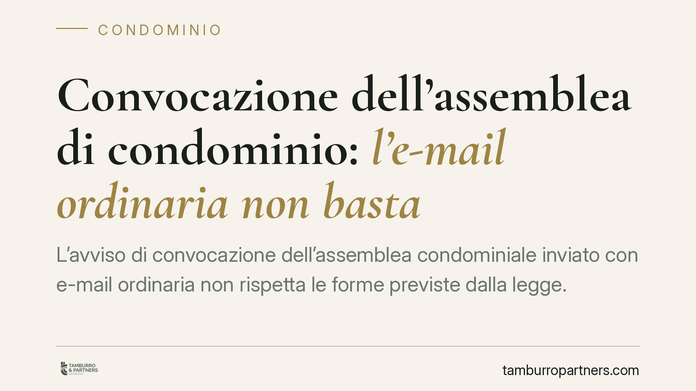

Convocazione dell'assemblea di condominio: l'e-mail ordinaria non basta
L'avviso di convocazione dell'assemblea condominiale inviato con e-mail ordinaria non rispetta le forme previste dalla legge. Il difetto può rendere annullabile la delibera assunta, con conseguenze pratiche per amministratori e condòmini. La ragione è semplice: la posta ordinaria non garantisce prova certa di spedizione e ricezione, requisito che la normativa richiede per la regolare instaurazione dell'assemblea.

Il problema
La convocazione dell'assemblea è l'atto con cui l'amministratore chiama i condòmini a deliberare. Perché la riunione sia valida, l'avviso deve raggiungere ciascun avente diritto con adeguato preavviso e attraverso una modalità che consenta di dimostrare l'invio e l'arrivo della comunicazione.
L'e-mail ordinaria non offre questa garanzia: non produce una ricevuta di consegna opponibile e non certifica l'identità del mittente né la data di recapito. È lo snodo che distingue la posta elettronica ordinaria dalla PEC, la posta elettronica certificata, che invece genera ricevute con valore probatorio.
Inquadramento normativo
L'art. 66, comma 3, disp. att. c.c. prevede che l'avviso di convocazione debba essere comunicato almeno cinque giorni prima della data fissata per l'adunanza in prima convocazione. La disposizione indica le modalità ammesse: posta raccomandata, posta elettronica certificata, fax o consegna a mano.
Si tratta di forme accomunate da un elemento: la tracciabilità. Ciascuna consente di documentare che l'avviso è stato spedito e, di regola, ricevuto. La e-mail ordinaria resta fuori da questo perimetro. La giurisprudenza di legittimità è orientata a considerare la delibera assunta in assenza di regolare convocazione come viziata; sul punto specifico dell'e-mail ordinaria segnaliamo l'esistenza di pronunce di merito e di legittimità, il cui esatto riferimento va verificato caso per caso prima di essere invocato in giudizio.
La delibera adottata dall'assemblea non regolarmente convocata è annullabile ai sensi dell'art. 1137 c.c.: non nulla. La differenza è rilevante, perché l'annullabilità richiede un'impugnazione tempestiva, mentre la nullità è deducibile senza limiti di tempo.
Implicazioni pratiche
Per l'amministratore, l'uso della sola e-mail ordinaria espone al rischio che le delibere approvate vengano annullate su impugnazione di un condòmino, con perdita di tempo, costi e possibile responsabilità gestionale.
Per il condòmino, il vizio di convocazione può costituire motivo di impugnazione. Occorre però tenere presenti alcuni limiti.
Primo: l'impugnazione va proposta entro trenta giorni. Il *dies a quo*, cioè il giorno da cui decorre il termine, è differenziato: per i condòmini assenti decorre dalla comunicazione del verbale, per i dissenzienti e gli astenuti dalla data della deliberazione. È opportuno verificare con attenzione la propria posizione, perché il termine è perentorio.
Secondo: occorre un interesse concreto e attuale a impugnare. Non basta il vizio formale in sé; deve emergere che l'irregolarità ha inciso sulla partecipazione o sull'esito.
Terzo: il vizio può sanarsi per comportamento concludente. Il condòmino che, pur convocato irregolarmente, partecipa all'assemblea senza contestare il difetto e vota, non potrà poi dolersene. La partecipazione senza riserve equivale ad accettazione della convocazione.
Va inoltre precisato che le modalità di computo del termine di cinque giorni e l'individuazione del momento rilevante — spedizione o ricezione dell'avviso — sono oggetto di interpretazione. Il punto non è pacifico e va valutato in concreto.
Cosa fare in concreto
- Utilizzare sempre un mezzo tracciabile. Convocare con PEC, raccomandata, fax o consegna a mano con firma per ricevuta. Escludere l'e-mail ordinaria come unico canale.
- Conservare le prove. Archiviare ricevute di accettazione e consegna PEC, avvisi di ricevimento delle raccomandate e copie firmate delle consegne a mano.
- Aggiornare l'anagrafe condominiale. Verificare periodicamente indirizzi e recapiti dei condòmini, incluse le PEC eventualmente indicate per le comunicazioni.
- Rispettare il preavviso minimo. Calcolare con margine i cinque giorni previsti, tenendo conto dell'incertezza sul momento rilevante per il computo.
- Verificare i termini prima di impugnare. Chi intende contestare una delibera dovrebbe accertare la propria posizione (assente, dissenziente, astenuto) e il relativo *dies a quo*, dato che i trenta giorni non ammettono proroghe.
La regolarità della convocazione non è un formalismo: è la condizione che rende opponibili a tutti le decisioni dell'assemblea.
---
*Contributo informativo a cura di Tamburro & Partners Avvocati. Non costituisce parere legale.*
Ogni condominio ha una storia a sé.
Se gestisci un'amministrazione e vuoi un confronto su una specifica questione condominiale, scrivi allo studio. Ti rispondiamo entro un giorno lavorativo.